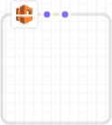
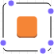

Die vorliegende Übersetzung wurde maschinell erstellt. Im Falle eines Konflikts oder eines Widerspruchs zwischen dieser übersetzten Fassung und der englischen Fassung (einschließlich infolge von Verzögerungen bei der Übersetzung) ist die englische Fassung maßgeblich.
Zeichenbereich
Im Bereich canvas zeigt Designer Ihre Vorlagenressourcen als Diagramm an. In diesem Bereich können Sie das Layout des Diagramms ändern, Ressourcen hinzufügen oder entfernen und Verbindungen zwischen Ressourcen hinzufügen oder entfernen. Sie können beispielsweise eine Auto-Scaling-Gruppe und eine Startkonfiguration aus dem Bereich Resource types dem Bereich canvas hinzufügen. Um diese verwandten Ressourcen zu verbinden, ziehen Sie eine Verbindung zwischen ihnen.
Wie modelliert Designer Ressourcen?
Wenn Sie eine Ressource aus dem Bereich Resource types in den Bereich canvas ziehen, bildet Designer diese als Container oder als quadratisches Objekt ab.
- Container
-
Container-Ressourcen sind anpassbare Rechtecke, die andere Ressourcen enthalten können. In Designer wird der
AWS::EC2::VPC-Ressourcentyp beispielsweise als Container abgebildet. Sie können Ressourcen, z. B. ein Subnetz, in die VPC ziehen.Container-Ressource
 - Quadratische Objekte
-
Ressourcen für quadratische Objekte können nicht in ihrer Größe geändert werden und können keine anderen Ressourcen enthalten. In Designer wird der
AWS::EC2::Instance-Ressourcentyp beispielsweise als quadratisches Objekt abgebildet.Quadratisches Objekt

Verbinden von Ressourcen
Ressourcen werden verbunden, um Zuordnungen zwischen verknüpften Ressourcen herzustellen. Wenn Sie beispielsweise dem Bereich canvas ein Internet-Gateway und eine VPC hinzufügen, haben diese keine Beziehung. Um das Gateway an die VPC anzufügen, müssen Sie sie verbinden. Die Methode zum Verbinden von Ressourcen ist vom Ressourcentyp abhängig und wie die Ressource in Designer abgebildet wird. Die einzelnen Methoden werden in den folgenden Beschreibungen und Abbildungen erläutert.
- Hinzufügen von Ressourcen zu Containern
-
Wenn Sie eine gültige Ressource in Container ziehen, erstellt Designer automatisch Zuordnungen zwischen der Ressource und dem Container. VPCs sind beispielsweise Container-Ressourcen; Sie können ein Subnetz in eine VPC ziehen, Designer stellt dann automatisch eine Zuordnung zwischen den beiden Ressourcen her.

Diese Zuordnungen werden in Ihrer Vorlage als intrinsische
Ref-Funktion dargestellt, wie im folgenden Beispiel gezeigt:JSON
"PublicSubnet": { "Type": "AWS::EC2::Subnet", "Properties": { "VpcId": { "Ref": "VPC" }, "CidrBlock": "10.0.0.0/24" }YAML
PublicSubnet: Type: 'AWS::EC2::Subnet' Properties: VpcId: !Ref VPC CidrBlock: 10.0.0.0/24In einigen Fällen wird durch Ablegen einer Ressource in einem Container keine Zuordnung erstellt. Sie müssen eine Verbindung zwischen den Ressourcen ziehen (in der nächsten Methode erhalten Sie weitere Informationen zum Ziehen von Verbindungen zwischen Ressourcen). Um zu prüfen, ob Designer Ressourcen zuordnet, verwenden Sie den Integrierter JSON- und YAML-Editor, um von einer Ressourcen zur nächsten nach
Refzu suchen. Wenn Sie beispielsweise eine Auto-Scaling-Gruppe zu einem Subnetz-Container hinzufügen, wird in Designer nicht dieVPCZoneIdentifier-Eigenschaft (Subnetz) der Gruppe angegeben. Um die beiden Ressourcen zu verbinden, müssen Sie eine Verbindung von der Auto-Scaling-Gruppe zum Subnetz ziehen. - Ziehen von Verbindungen zwischen Ressourcen
-
Die Edge jedes Quadrats und jeder Container-Ressource besteht aus einem oder mehreren Punkten, die die Ressourcen darstellen, mit denen Sie Verbindungen erstellen können. Zum Herstellen einer Verbindung ziehen Sie eine Verbindungslinie von dem Punkt zu dem entsprechenden Ressourcentyp. Um beispielsweise ein Internet-Gateway an eine VPC anzufügen, ziehen Sie eine Linie vom Anfügepunkt des VPC-Gateways zu einer beliebigen Stelle in der VPC.

Diese Zuordnungen werden in Ihrer Vorlage als intrinsische
Ref-Funktion oder als separater Ressourcentyp dargestellt. Wenn Sie beispielsweise ein Internet-Gateway mit einer VPC verbinden, erstellt Designer einenAWS::EC2::VPCGatewayAttachment-Ressourcentyp in Ihrer Vorlage, um diese zu verknüpfen. Ressourcen wie diese werden nicht im Bereich Resource types (Ressourcentypen) aufgeführt.JSON
"VPCGatewayAttachment": { "Type": "AWS::EC2::VPCGatewayAttachment", "Properties": { "InternetGatewayId": { "Ref": "InternetGateway" }, "VpcId": { "Ref": "VPC" } }YAML
VPCGatewayAttachment: Type: 'AWS::EC2::VPCGatewayAttachment' Properties: InternetGatewayId: !Ref InternetGateway VpcId: !Ref VPC - Programmieren von Verbindungen zwischen Ressourcen
-
In einigen Fällen müssen Sie die JSON oder YAML der Vorlage bearbeiten, um Verbindungen zu erstellen, z. B. wen Sie zwei Sicherheitsgruppen verbinden. Wenn Sie die JSON oder YAML zum Erstellen von Verbindungen bearbeiten müssen, erstellen Sie hartcodierte Verbindungen (gestrichelte Verbindungen). Sie können diese Verbindungen im Bereich canvas nicht erstellen oder bearbeiten.

Beim Einbetten von Verweisen (
Ref) in die Eigenschaft einer Ressource erstellen Sie in der Regel hartcodierte Verbindungen. Sie können beispielsweise eine Verbindung zwischen zwei Sicherheitsgruppen definieren, bei der eine Sicherheitsgruppe über eine eingebettete Eingangsregel verfügt, die Datenverkehr von der anderen Gruppe zulässt. Die folgendeWebServerSecurityGroup-Ressource weist eine Eingangsregel mit einem Verweis auf diePublicLoadBalancerSecurityGroup-Ressource auf.JSON
"WebServerSecurityGroup": { "Type": "AWS::EC2::SecurityGroup", "Properties": { "VpcId": { "Ref": "VPC" }, "GroupDescription": "Allow access from HTTP and SSH traffic", "SecurityGroupIngress": [ { "IpProtocol": "tcp", "FromPort": 80, "ToPort": 80, "CidrIp": "0.0.0.0/0" }, { "IpProtocol": "tcp", "FromPort": 22, "ToPort": 22, "CidrIp": { "Ref": "SSHLocation" } } ] } ...YAML
WebServerSecurityGroup: Type: 'AWS::EC2::SecurityGroup' Properties: VpcId: !Ref VPC GroupDescription: Allow access from HTTP and SSH traffic SecurityGroupIngress: - IpProtocol: tcp FromPort: 80 ToPort: 80 CidrIp: 0.0.0.0/0 - IpProtocol: tcp FromPort: 22 ToPort: 22 CidrIp: !Ref SSHLocation
Zugreifen auf häufige Ressourcenaktionen mit dem Resource-Menü
Das Resource-Menü bietet einfachen Zugriff auf häufig verwendete Ressourcenaktionen: Bearbeiten von Ressourceneigenschaften, Duplizieren einer Ressource, Löschen einer Ressource oder Anzeigen der Dokumentation für die Ressource. Um das Menü Resource anzuzeigen, klicken Sie im Bereich canvas mit der rechten Maustaste auf eine Ressource. Der Dokumentationslink führt zur Vorlagenreferenz, in der die Eigenschaften und Syntax für diese Ressource beschrieben sind.
Resource-Menü
Definieren expliziter Abhängigkeiten
Um die Reihenfolge anzugeben, in der AWS CloudFormation Ressourcen erstellt und löscht , können Sie explizite Abhängigkeiten erstellen. Explizite Abhängigkeiten sind hilfreich für das Überschreiben der parallelen Ressourcen-Erstellung und -Löschung. AWS CloudFormation erkennt automatisch, welche Ressourcen in einer Vorlage parallel verarbeitet werden können und welche nicht. Wenn Sie in derselben Vorlage eine Eigenschaft angeben, die auf ein Attribut aus einer anderen Quelle verweist (mithilfe der intrinsischen Ref-Funktion) oder die ein Attribut von einer anderen Ressource abruft (mithilfe der intrinsischen Fn::GetAtt-Funktion), ergibt sich daraus eine Abhängigkeit, und AWS CloudFormation erstellt diese in der richtigen Reihenfolge.
In einigen Fällen müssen Sie Abhängigkeiten jedoch explizit definieren. Eine Routing-Regel kann beispielsweise ein Internet-Gateway erst dann verwenden, wenn das Gateway der VPC angefügt wurde. Normalerweise erstellt AWS CloudFormation die Routing-Regel aufgrund einer impliziten Abhängigkeit sofort nach dem Erstellen des Internet-Gateways. AWS CloudFormation erstellt die Regel möglicherweise aber, bevor das Internet-Gateway mit der VPC verknüpft wurde, wodurch ein Fehler verursacht wird. Aus diesem Grund müssen Sie explizit eine Abhängigkeit für die Gateway-VPC-Verknüpfung definieren.
Zum Erstellen einer expliziten Abhängigkeit ziehen Sie eine Linie vom Punkt DependsOn (*) der Route zu der Gateway-VPC-Verknüpfung.

Weitere Informationen dazu, wann Sie möglicherweise eine explizite Abhängigkeit erstellen müssen, finden Sie unter DependsOn Attribut.
JSON
In JSON werden diese expliziten Abhängigkeiten als DependsOn-Attribut in einer Ressource dargestellt, wie im folgenden Beispiel gezeigt:
"PublicRoute": { "Type": "AWS::EC2::Route", "DependsOn": "VPCGatewayAttachment", "Properties": { "DestinationCidrBlock": "0.0.0.0/0", "RouteTableId": { "Ref": "PublicRouteTable" }, "GatewayId": { "Ref": "InternetGateway" } }
YAML
In YAML werden diese expliziten Abhängigkeiten als DependsOn-Attribut in einer Ressource dargestellt, wie im folgenden Beispiel gezeigt:
PublicRoute: Type: 'AWS::EC2::Route' DependsOn: - VPCGatewayAttachment Properties: DestinationCidrBlock: 0.0.0.0/0 RouteTableId: !Ref PublicRouteTable GatewayId: !Ref InternetGateway